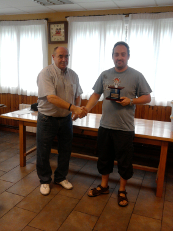

Pinchetas en Beraun
11-09-2011
Otro año más nos han invitado a
jugar
el torneo de pinchetas que organiza el club de Beraun. Este año nos
hemos reunido allí seis equipos, además del equipo local, Easo,
Gros, Tolosa, Fomento y nosotros, por nuestra parte nos
“sacrificamos” Iosu, Claudio, Aritz y Eneko. Los favoritos
Fomento ganó con claridad y nosotros acabamos segundos, a 5 puntos.
Buen papel de Eneko en el 4º tablero y aceptable de Artiz en el 3º,
mala actuación de Claudio de segundo y Iosu solo perdió una de
primero.

Eneko recogiendo el trofeo.
Respecto a lo importante, el ágape
muy
bueno como siempre.
|